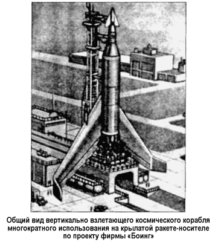
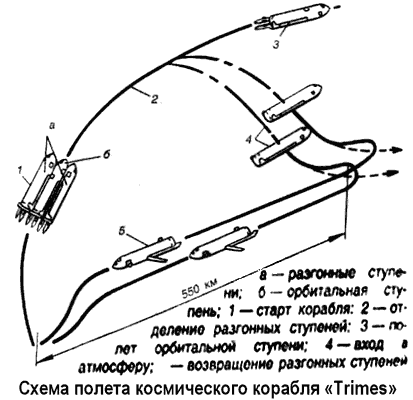
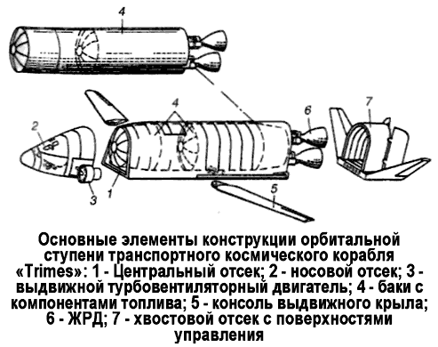

Другие проекты двухступенчатых космических кораблей
Работы по созданию двухступенчатых космических кораблей многоразового использования также проводились совместно фирмами «Боинг» и «Локхид». В частности, были рассмотрены варианты двухступенчатых кораблей с параллельным расположением ступеней, которые исследовались при горизонтальном и вертикальном стартах с различными двигательными установками.
В ходе анализа возможных схем транспортного космического корабля будущего специалисты фирмы «Боинг» пришли к заключению, что многократно используемая система для запуска космических аппаратов будет представлять собой различные вариации самолетов, включая вертикально взлетающие, горизонтально взлетающие с воздушно-реактивными двигателями и пилотируемые самолеты-носители космических аппаратов. Стоимость такого самолета оценивалась в 1 миллиард долларов.

Специалисты «Боинга» утверждали, что первым шагом в развитии ракет-носителей разового действия могло бы стать создание крылатой ракеты-носителя (полная масса — 1700 тонн, полная длина — 82 метра, размах крыла — 43 метра), взлетающей вертикально со стартового стола. Горизонтально взлетающие носители, которые появятся позднее, будут иметь большие крылья и более тяжелое шасси, но зато они смогут возвратиться на базу и произвести аварийную посадку в случае неисправности.
Носитель с воздушно-реактивными двигателями будет близок к самолету по своей схеме и выполнению операций.
Так как двигателям носителей с ВРД необходим атмосферный кислород, они будут запускать полезную нагрузку (орбитальную ступень) с высоты в 30 километров (так называемый «воздушный старт»). Главное их преимущество по сравнению с баллистическими ракетами — маневренность, но они будут обладать и другими достоинствами высотных сверхзвуковых самолетов.
Конструкторы «Боинга» исследовали также возможность старта с ракетной тележки. Самолет, стартующий с ракетной тележки, будет иметь меньшие крылья, потребует меньше топлива и более простое и легкое шасси, все это упростит проблему входа в атмосферу.
В то же самое время совместно с «Боингом» фирма «Локхид» разрабатывала двухступенчатый космический самолет на 100 полетов со стартовым весом около 500 тонн, способный доставлять на низкую околоземную орбиту до 11 тонн полезной нагрузки, включающей 10 пассажиров, 3 тонны груза и экипаж из двух человек. По одному из проектов ступени располагались горизонтально, и самолет вначале разгонялся ракетной тележкой. После взлета с ракетной тележки «включалась» нижняя ступень. В конце разгона первая ступень отделялась и управляемая экипажем совершала планирующий спуск и горизонтальную посадку на аэродроме базы.
Вторая ступень с силовой установкой на ЖРД выводилась на заданную орбиту. После выполнения полета в космическом пространстве вторая ступень, управляемая экипажем, входила в атмосферу и совершала горизонтальную посадку на аэродроме. Для управления вектором тяги на концах крыльев обоих ступеней собирались установить ракетные двигатели.
Кроме того, фирма «Локхид» работала над увеличенным вариантом космического самолета, который должен был перевозить на околоземную орбиту от 50 до 100 пассажиров.
По контракту с ВВС США фирма «Канадайр» («Canadair») разработала космический корабль и провела изучение проблемы спасения экипажа на всех стадиях полета Земля-Орбита-Земля.
Предполагалось, что космический корабль весом 10,8 тонны с экипажем из двух человек будет запускаться на орбиты высотой от 370 до 36000 километров ракетой-носителем с ЖРД, форма аппарата была выбрана из соображений минимизации аэродинамического нагрева при входе в атмосферу.
Кабина разделена на два отсека. Передний отсек используется при выходе на орбиту и входе в атмосферу. В нем находится управление кораблем и аварийные системы, система связи, навигации, система аварийного спасения; объем отсека — 5 м3. Задний отсек разделен герметической перегородкой на две части. Передняя часть со свободным объемом 6,5 м3 используется экипажем для выполнения работы на орбите.
Задняя часть заполнена азотом для предотвращения пожара.
В ней расположены оборудование подачи криогенного топлива и система обеспечения жизнедеятельности экипажа.
Защитное покрытие для безопасного полета через радиационные пояса должно весить около 9 тонн. Во время прохождения через радиационные пояса и при солнечных вспышках экипаж должен находиться в защищенном отсеке.
К более поздним проектам двухступенчатых космических кораблей многократного использования можно отнести корабль «Траймес» («Trimes»), разработанный фирмой «Конвейр» в 1968 году по контракту с НАСА.
«Траймес» состоял из трех почти идентичных элементов.
На каждом из них размещался свой экипаж из двух человек.
Стартовая масса космического корабля — 518 тонн.
Основная силовая установка ступеней — ЖРД. Старт вертикальный при параллельном размещении ступеней. Две внешние ступени являются разгонными, а центральная — орбитальной.

При запуске все ракетные двигатели получают питание из топливных баков разгонных ступеней, которые после выработки топлива и достижения скорости 2440 м/с отделяются от орбитальной ступени и возвращаются на Землю.
Основными элементами конструкции ступеней являются цилиндрический отсек, два жидкостных ракетных двигателя, два турбовентиляторных двигателя и выдвижное крыло.
Вокруг цилиндрического отсека устанавливается обтекатель, обеспечивающий теплозащиту и аэродинамическую форму по типу летательных аппаратов с несущим корпусом.

В разгонных ступенях в цилиндрическом отсеке размещаются только топливные баки, а в орбитальной ступени помимо топливных баков меньшего объема, имеется секция длиной около 4 метров и диаметром 5 метров для перевозки грузов или 12 пассажиров.
В носовой части ступеней находится кабина экипажа, а хвостовая часть несет органы управления полетом.
Топливо в ЖРД подается вытеснительной системой; тяга двух ЖРД — 113 тонн.
Турбовентиляторные двигатели служат для дозвукового полета при возвращении на Землю. Скорость при заходе на посадку — около 280 км/ч. Указывалось, что для обеспечения захода на посадку при одном работающем двигателе масса ступени в это время должна быть не более 32 тонн.
Выдвижное крыло ступеней — переменной стреловидности.
Это вызвано необходимостью аэродинамической балансировки при дозвуковом полете. При полном выдвижении крыла на угол стреловидности 22° его размах составляет около 29 метров.
Предполагалось, что космический корабль рассмотренной схемы способен доставлять полезный груз массой 11,3 тонны на геоцентрическую орбиту с небольшим наклонением к экватору или 8,4 тонны — на полярную орбиту.
Стоимость одного запуска оценивалась в 300 тысяч долларов.
Считалось, что применение такого космического корабля позволит снизить стоимость выведения на орбиту 1 килограмма полезного груза с 1110 долларов для некоторых обычных ракет-носителей до 44 долларов. Общая стоимость работ по этой системе оценивалась в 1–2 миллиарда долларов.
По мнению специалистов фирмы «Конвейр», предложенная схема транспортного космического корабля обеспечивала гибкость использования его элементов. Так, возможности доставки на орбиту более тяжелого полезного груза достигается путем добавления разгонных ступеней или установкой на ступени дополнительных стандартных секций для увеличения объема топливных баков и грузового отсека. Однако такое увеличение массы должно компенсироваться соответствующим повышением характеристик двигателей.